this project began as a way to get experience with core
embedded Linux and camera interfacing. through trial and
error, bitbake after bitbake, i finally was able to
create a working recipe for my Yocto image with wifi and camera interfacing. i created this step by step tutorial in
hopes of helping someone else do a similar (or same)
project!
the photos and screenshots in this blog are clickable to enlarge! i hope they can help clarify if there is any confusion in the written instruction.

what you'll need:
- raspberry pi 0 w
- power cable for raspberry pi 0 w
- raspberry pi camera module, either IMX219 (v2) or IMX708 (v3)
- USB to TTL adapter
- three female to female wires (OR six female to male wires, using a breadboard to connect them in the middle. i did this before i got female to female wires and it looked janky but it worked!)
- host machine running Linux (i used Ubuntu (26.04 LTS) after trying on Mint without success, i cannot attest to other distros)
- microSD card for raspberry pi 0 w
step one
install dependencies and build system
install all the necessary libraries and dependencies on the Linux host machine, then clone the Yocto build system (poky) via git. in termal, run the following commands:
sudo apt update
sudo add-apt-repository universe
sudo apt update
sudo apt install gawk wget git diffstat unzip texinfo gcc build-essential chrpath socat cpio python3 python3-pip python3-pexpect xz-utils debianutils iputils-ping python3-git python3-jinja2 libegl1 libsdl1.2-dev pylint xterm python3-subunit mesa-common-dev zstd lz4 file locales
sudo locale-gen en_US.UTF-8
git clone -b scarthgap https://git.yoctoproject.org/poky
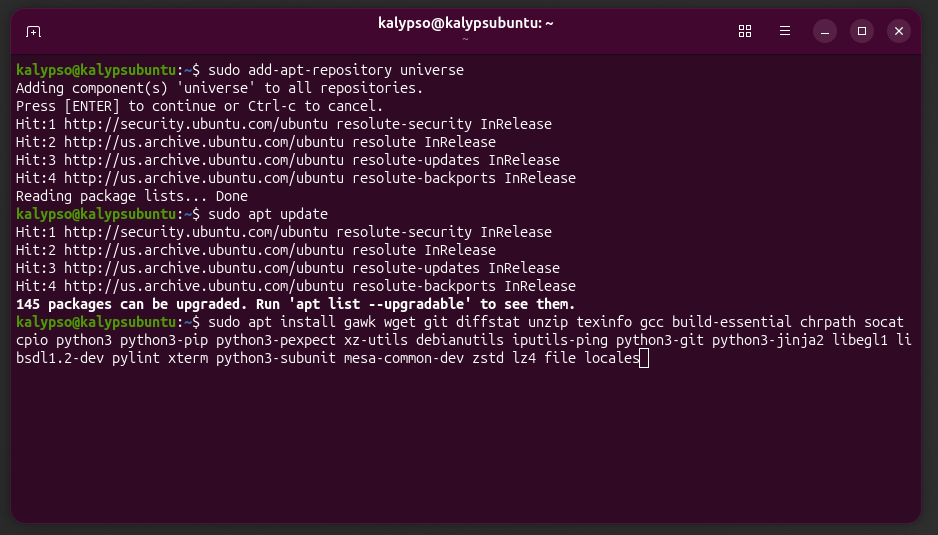
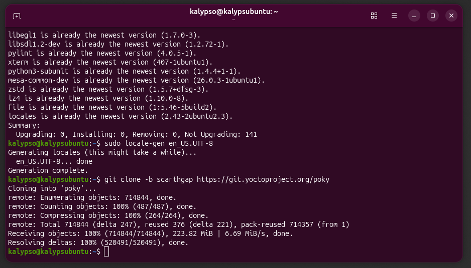
for my distro and version of linux, i tried the kirkstone release first with no success and ended up using the scarthgap release.
step two
clone necessary layers and initialize build environment
inside the newly cloned poky directory, clone the raspberry pi USB layer and the open-embedded layer, necessary for libcamera and v4l-utils. run the commands:
cd poky
git clone -b scarthgap https://git.yoctoproject.org/meta-raspberrypi
git clone -b scarthgap https://git.openembedded.org/meta-openembedded
next, initialize the build environment. still inside the poky directory, run:
source oe-init-build-env
this drops you into the new directory poky/build and generates the configuration files local.conf and bblayers.conf in the directory poky/build/conf
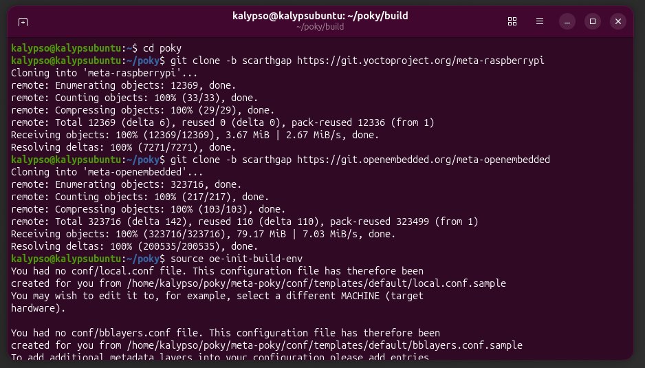
step three
bake the cloned layers and create a custom layer to bake
still inside poky/build, bake the layers we cloned. there is no confirmation message when adding the layers, so no message = all good! run:
bitbake-layers add-layer ../meta-raspberry-pi
bitbake-layers add-layer ../meta-openembedded/meta-oe
bitbake-layers add-layer ../meta-openembedded/meta-python
bitbake-layers add-layer ../meta-openembedded/meta-multimedia
create a custom layer to support wifi and camera inferfacing, as well as for any future customizations, and bake the custom layer. Yocto's built in tool for creating layers automatically creates the standard layer structure, with conf/layer.conf, recipes-example/, COPYING.MIT, and README. still in poky/build, run:
bitbake-layers create-layer ../meta-mylayer
bitbake-layers add-layer ../meta-mylayer
confirm all layers were added:
bitbake-layers show-layers
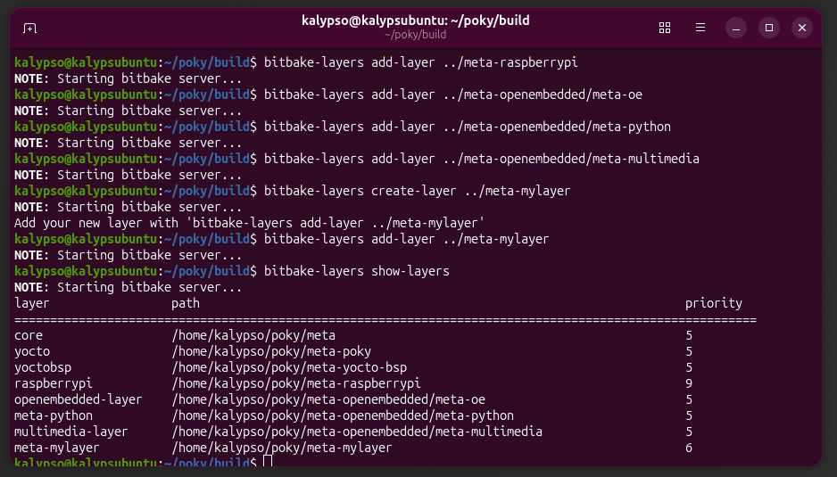
step four
add kernel configuration for wifi
create the configuration files for wifi capabilities in the custom layer. run:
mkdir -p ~/poky/meta-mylayer/recipes-kernel/linux/linux-raspberrypi
cat > ~poky/meta-mylayer/recipes-kernel/linux/linux-raspberrypi/wifi.cfg << 'EOF'
CONFIG_CFG80211=m
CONFIG_MMC=y
CONFIG_MMC_SDHCI=y
CONFIG_MMC_SDHCI_PLTFM=y
CONFIG_BRCMFMAC=m
CONFIG_BRCMFMAC_WCC=m
CONFIG_BRCMFMAC_SDIO=y
EOF
cat > ~poky/meta-mylayer/recipes-kernel/linux/linux-raspberrypi_%.bbappend << 'EOF'
FILESEXTRAPATHS:prepend:="${THISDIR}/${PN}:"
SRC_URI:append="file://wifi.cfg"
EOF
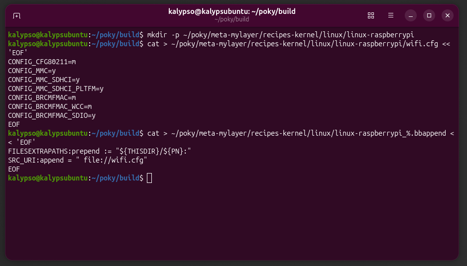
step five
edit local configuration file
still in the poky/build directory, run:
vim conf/local.conf
find the line that says MACHINE and set the target machine:
MACHINE="raspberrypi0-wifi"
create a new line to set a limit on the maximum number of concurrent tasks that bitbake will execute.
my system (2011 MacBook Air) failed at 4 and would only work with 2. if you're on a newer system, 4 may work, or you may not have to set a limit at all.
2 is the most conservative number of consecutive tasks, but i would say it's safe to set it at 4 and see if your machine can do that because it will take significantly less time.
learning the right number for your machine is just trial and error; the worst thing it will do is fail and you'll have to come back to this step and adjust the number.
after the line setting the target machine, add:
BB_NUMBER_THREADS="2"
PARALLEL_MAKE="-j 2"
enable UART / serial communication. at the bottom of the local.conf file, add:
ENABLE_UART="1"
enable I2C. under the line enabling UART, add:
ENABLE_I2C="1"
enable camera use. i used the raspberry pi camera module v3, IMX708 sensor, but the line can easily be changed to use the v2 IMX219 sensor. after the line to enable I2C, add:
RASPBERRYPI_CAMERA_V3="1"
or, if using v2:
RASPBERRYPI_CAMERA_V2="1"
add camera and wifi support modules and libraries. after the camera setting line, add:
IMAGE_INSTALL:append="linux-firmware-rpidistro-bcm43430 wpa-supplicant v4l-utils libcamera kernel-module-brcmfmac kernel-module-brcmfmac-wcc kernel-module-bcm2835-unicam i2c-tools imx708"
if using camera module v2, change "imx708" to "imx219".
add accepted flags and modules to force to autoload. after IMAGE_INSTALL, add lines:
LICENSE_FLAGS_ACCEPTED="synaptics-killswitch"
KERNEL_MODULE_AUTOLOAD+="brcmfmac bcm2835-unicam i2c-dev imx708"
again, if usng camera module v2, change "imx708" to "imx219".
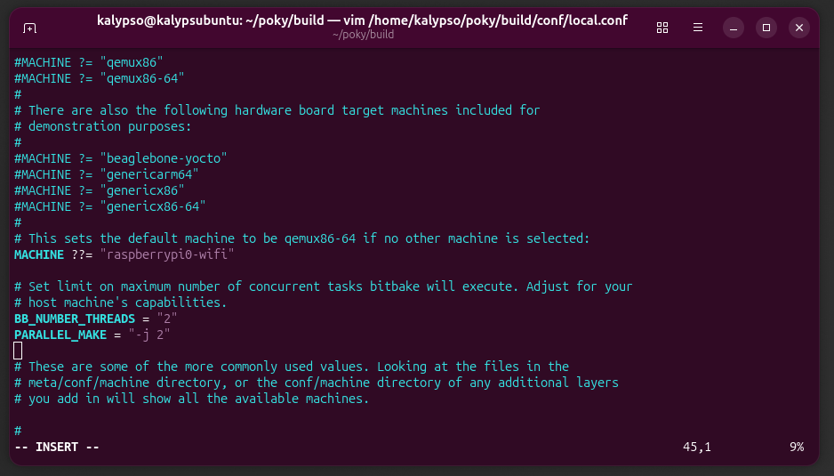
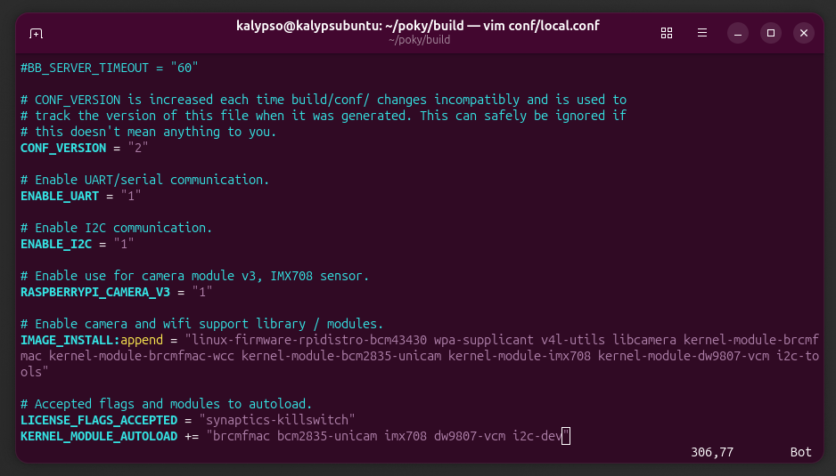
step six
build the image!
we're ready to build the minimal image! inside the poky/build folder, run:
bitbake core-image-minimal
expect this to take a few hours on the first build. mine literally took about SEVEN hours. subsequent builds will take less time.
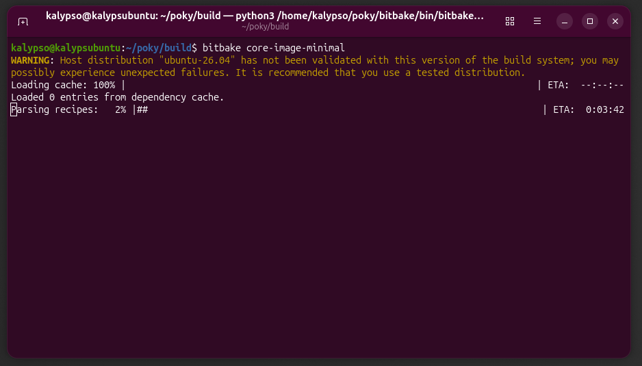
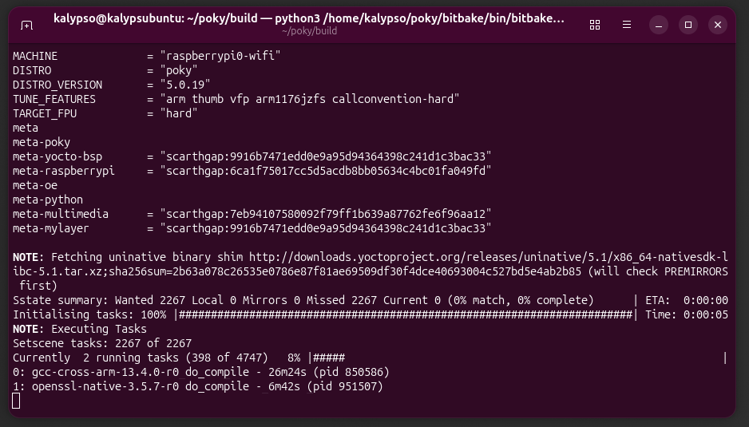
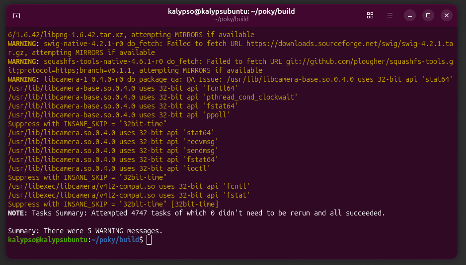
step seven
locate the image and decompress
cd ~/poky/build/tmp/deploy/images/raspberrypi0-wifi/
ls core-image-minimal*
the image will be a compressed file, the extension depending on how your machine compresses files, mine was .bz2. the image name will start with "core-image-minimal-raspberrypi0-wifi". my file name had the timestammp of the build at the end:
core-image-minimal-raspberrypi0-wifi.rootfs-20260803065926.wic.bz2
unzip the image using the found file name. run:
bunzip2 -kf YOUR_FILE_NAME.wic.bz2
give it a minute to complete. the -k flag keeps the original zip file, copying it then unzipping the original. the -f flag ifnores that the file has a link to another file. the unzipped file extension will be .wic, which is the full disk image, including the blootloader, rootfs, and partition table. to see the file, run:
ls *.wic
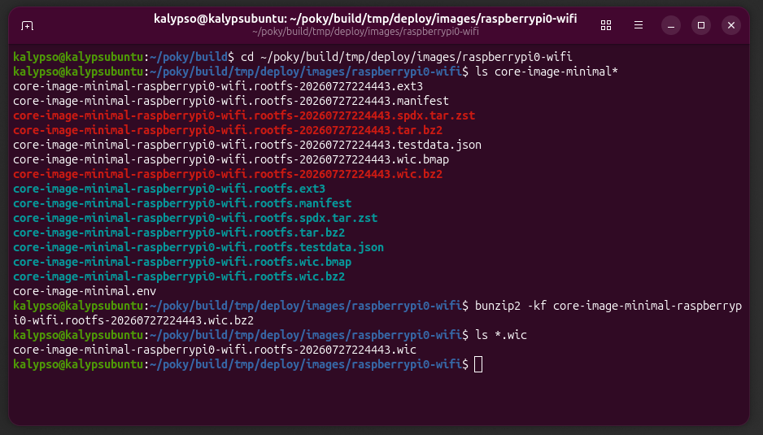
step eight
flash the microSD with your image!
locate the microSD. before and after inserting the card into the host machine, run the command:
lsblk
bto be sure of the device name. verify that the size matches the microSD's size. DO NOT guess the device as you don't want to wipe your host machine!
mine appeared as /dev/sdc/ and a partition had a mount point because it was used before. if yours has a mount point, you'll need to unmount it first. to unmount, run:
sudo umount /dev/sdc1
replacing "sdc1" with what your device mount point is.
your microSD is ready to be flashed! run:
sudo apt update
sudo apt install bmaptool copy YOUR_FILE_NAME.wic /dev/sdc
replace "sdc" with your block device name.
then eject safely. run:
sudo sync
sudo eject /dev/YOUR_DEVICE
then insert the microSD into the raspberry pi 0 w.
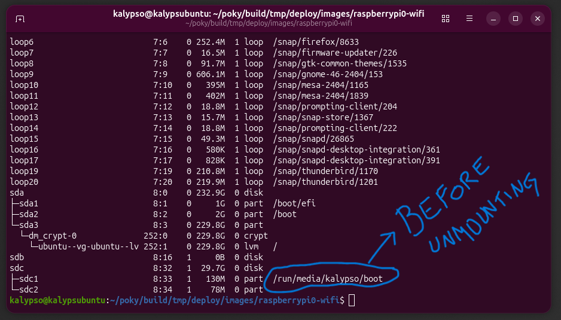
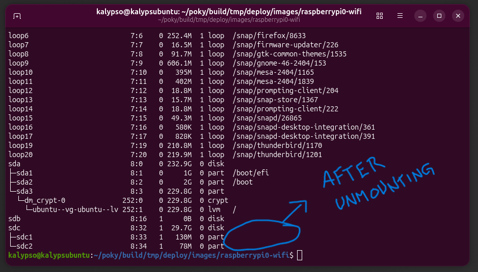
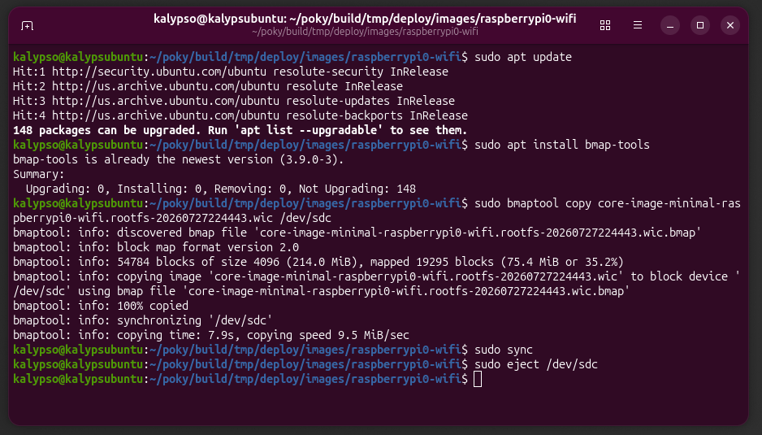
step nine
connect the USB to TTL adapter
in a minimal image, there is no HDMI friendly video output by default, and wifi won't be configured yet. we have to use serial to communicate with the pi, using a USB to TTL serial adapter.
connect the adapter to the pi's GPIO, only wiring GND, TX, and RX (see the pin out below, use UART0_TXD and UART0_RXD). use an external power supply to power the raspberry pi directly. i did it this way because eventually i need the pi to be independent, so i didn't want to rely on power from the adapter.
wire and plug the USB into the host computer. do NOT power the pi yet! there will be a specific instruction when the pi is ready to be plugged into power.
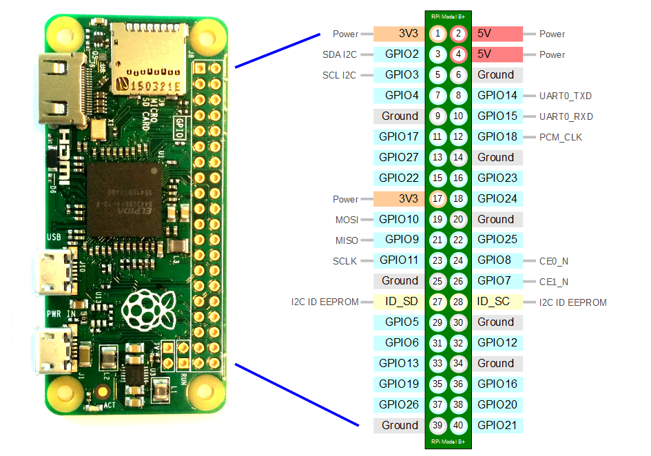
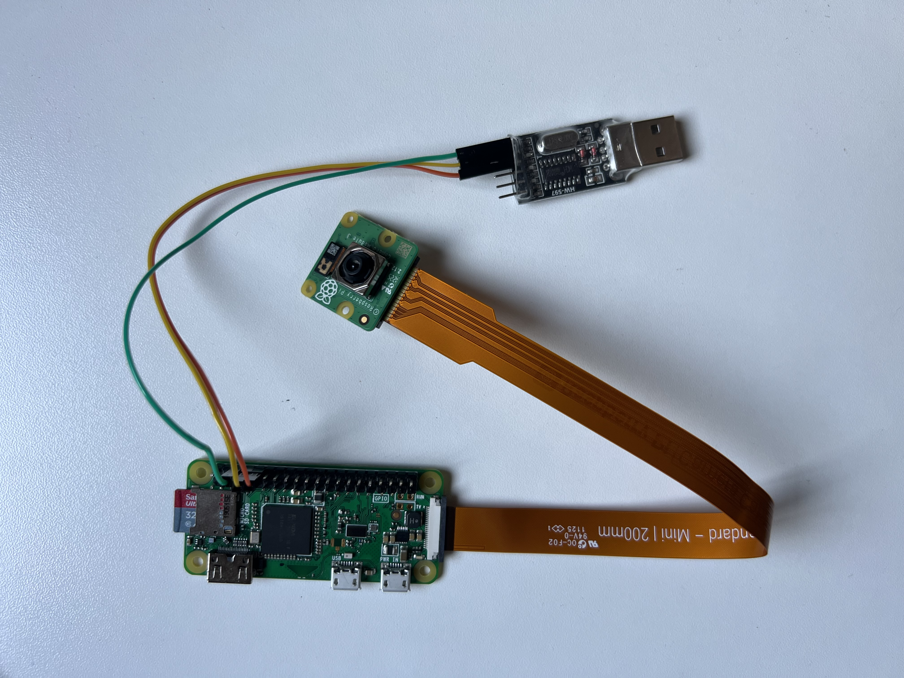
step ten
find device and set permissions
after adapter is inserted into host machine, run:
sudo dmesg | tail
find a message that says new device connected and note the name. mine was "/dev/ttyUSB0/".
set up the serial terminal program and set permissions on the host machine. i used minicom for serial communication because i like the interface, but screen or picocom would be good alternatives as well.
install minicom and give yourself permission to communicate through serial. run:
sudo apt install minicom
sudo usermod -aG dialout $USER
then log out and log back in for the new permission to take effect.
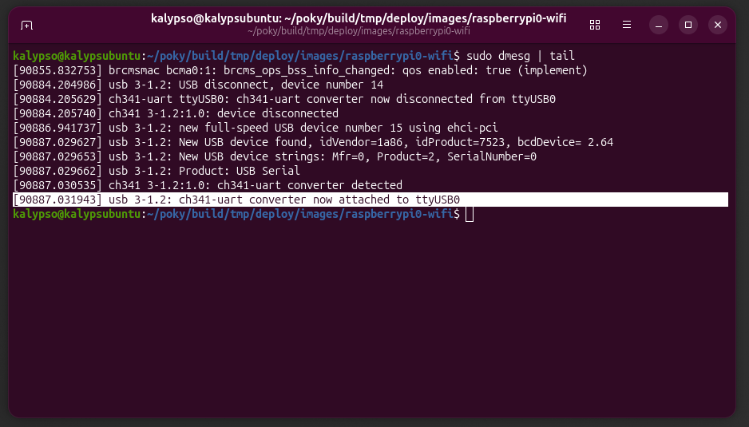
step eleven
open serial communication
open terminal when logged back in. with the pi still NOT powered on, run:
minicom -D /dev/ttyUSB0 -b 115200
replacing ttyUSB0 with your device name. finally, plug the power cable into the pi! after a moment, serial messages should stream in. wait for the login prompt, then type "root" and enter. if prompted for a password (i wasn't), just hit enter.
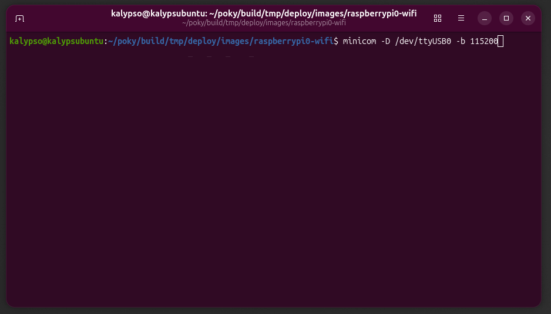
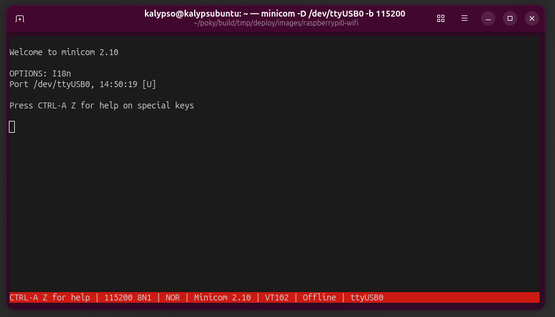
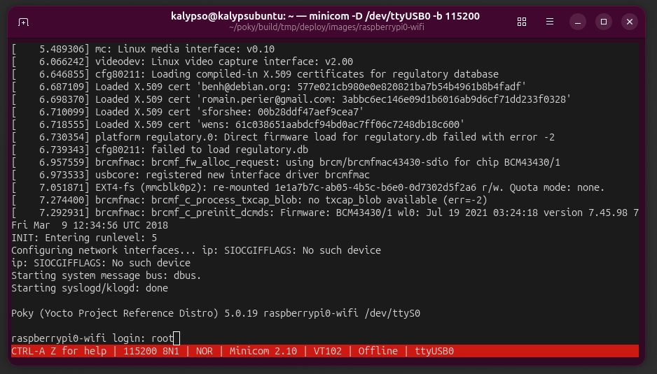
step twelve
confirm wifi driver
we are officially in the pi! let's confirm that the wifi driver is loaded properly. run:
lsmod | grep brcm
the output should be a list with brcmfmac, brcmutil, cfg80211, and brcmfmac_wcc. then run:
ip link
the output should show wlan0 and lo.
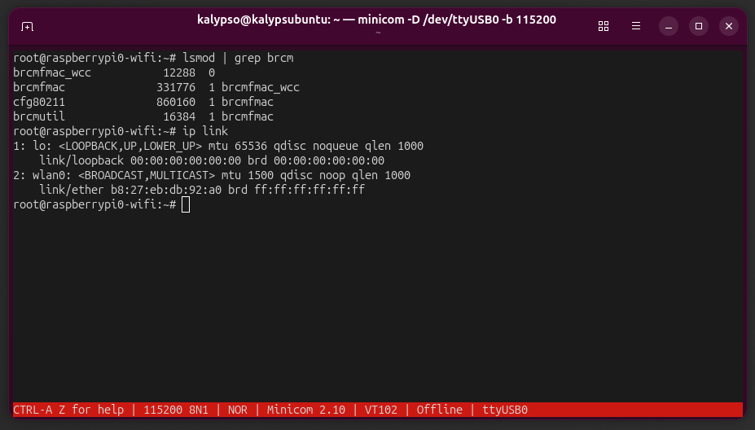
step thirteen
make and initialize wpa_supplicant
create wpa_supplicant configuration file to connect to wifi. run:
cat > /etc/wpa_supplicant.conf << 'EOF'
network={
ssid="WIFI-NAME"
psk="WIFI-PASSWORD"
}
EOF
replace "WIFI-NAME" and "WIFI-PASSWORD" with the name and password of the wifi you're connecting to. make sure the name exactly matches (capitalization, spaces, etc).
set up the interface and initialize wpa_supplicant. run:
ip link set wlan0 up
wpa_supplicant -B -i wlan0 -c /etc/wpa_supplicant.conf
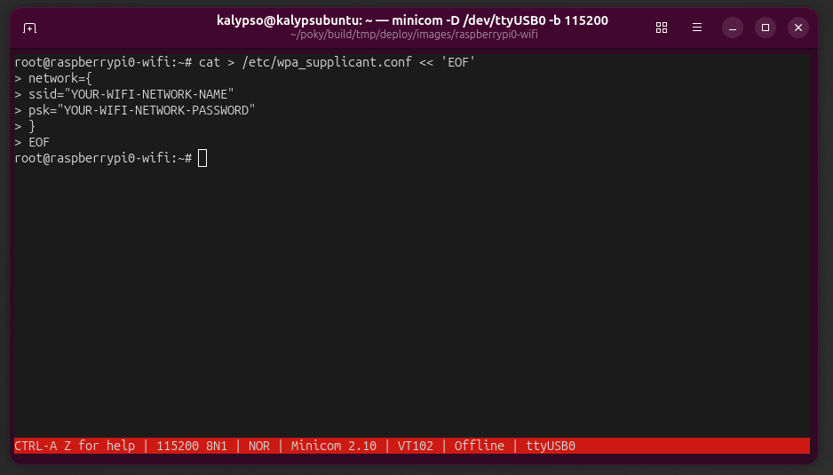
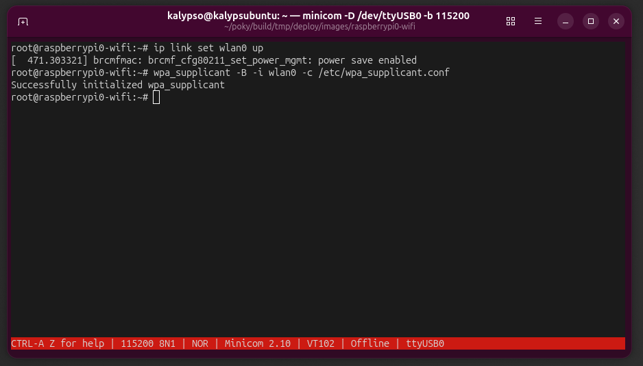
step fourteen
IP address
ask the wifi router to assign an IP address to the pi. run:
udhcpc -i wlan0
after receiving a message that the pi obtained an IP address from the router's IP address, confirm / verify by running:
ip address show wlan0
ping -c 3 8.8.8.8
yay, the wifi is set up!
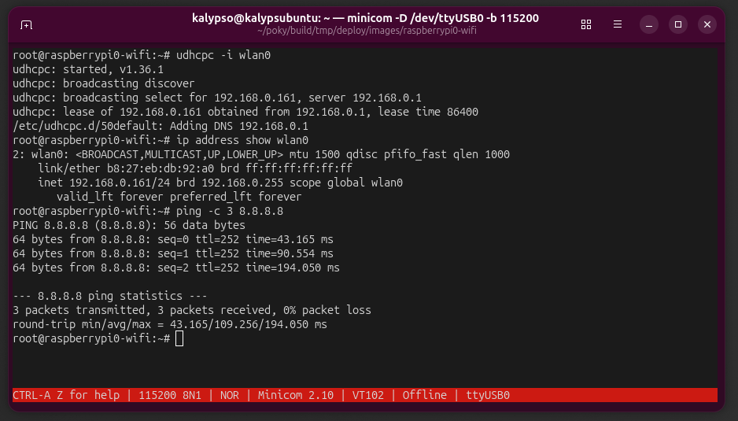